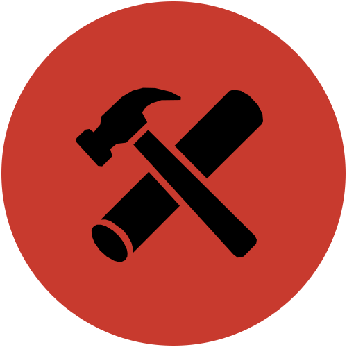
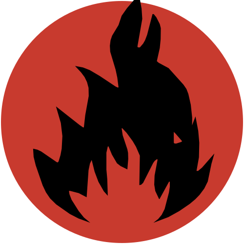
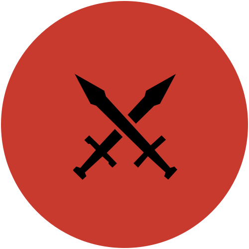
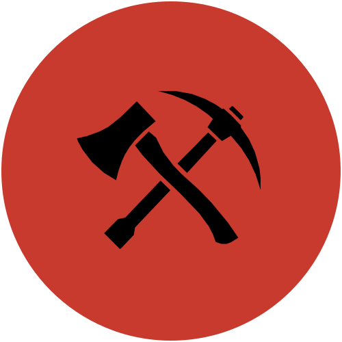

01

BUILD / BASE
↗
Білдер
Будуєш базу, облаштовуєш територію та створюєш місце, куди хочеться повертатися.

NIGHT FRONT OXIDE Приєднатись ↗Клан для тих, хто хоче грати разом, але не хоче перетворювати гру на другу роботу.
NIGHT FRONT — це дружня команда без культу онлайна. Не треба сидіти 24/7, звітувати про кожну годину чи боятися пропустити день.
У кожного є власне життя. Навчання, робота, сім'я, справи — усе це важливіше за цифру «онлайн». Заходимо, коли є час і бажання, та просто добре проводимо час разом.
Немає обов'язку постійно бути в грі.
Поважаємо своїх і не створюємо зайвих конфліктів.
Можеш грати часто або рідко — це нормально.
Головна мета — комфортна компанія та задоволення.
Лідерка NIGHT FRONT — дівчина, яка не сидить у грі цілодобово. Вона може заходити нечасто, і для нас це абсолютно нормально.
Клан не будується навколо постійного онлайну однієї людини. Тут кожен може бути активним тоді, коли йому зручно.
Не потрібно підходити під одну схему. Можеш мати одну роль, кілька ролей або взагалі просто грати з нами.

Будуєш базу, облаштовуєш територію та створюєш місце, куди хочеться повертатися.

Екшен, перестрілки, рейди та перевірка навичок — якщо любиш динаміку, тобі сюди.

Добуваєш ресурси, підтримуєш запаси та допомагаєш команді тримати все в нормі.
Не треба прикидатися активним гравцем. Будь собою.
Допомагаємо одне одному без зайвого пафосу.
Твій графік — твій графік.
Заходимо не заради звіту, а заради гри.
Якщо тобі близький такий формат — без зайвого тиску, з нормальними людьми та можливістю грати у своєму темпі — подавай заявку.
DISCORDПодати заявку↗